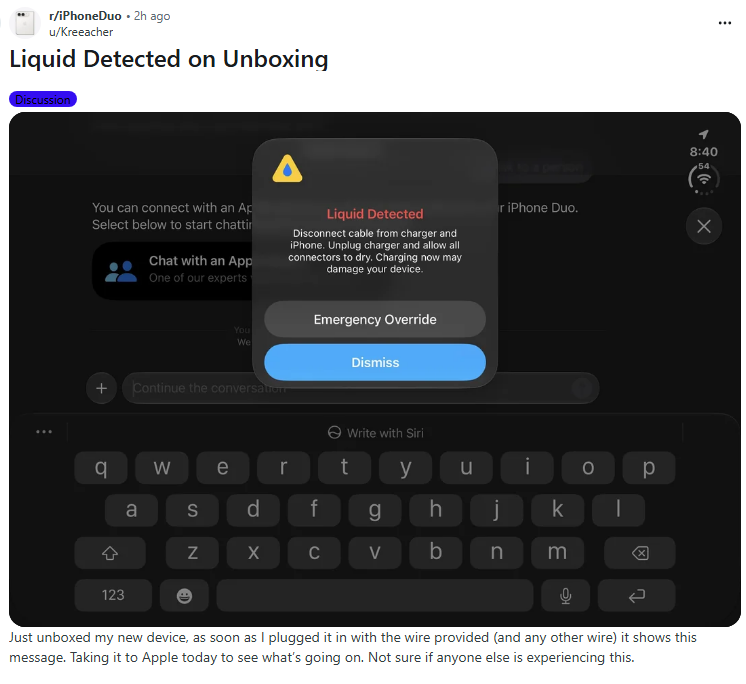
처음 언박싱하고 켜자마자 액체가 감지된다면서 경고창이 뜸
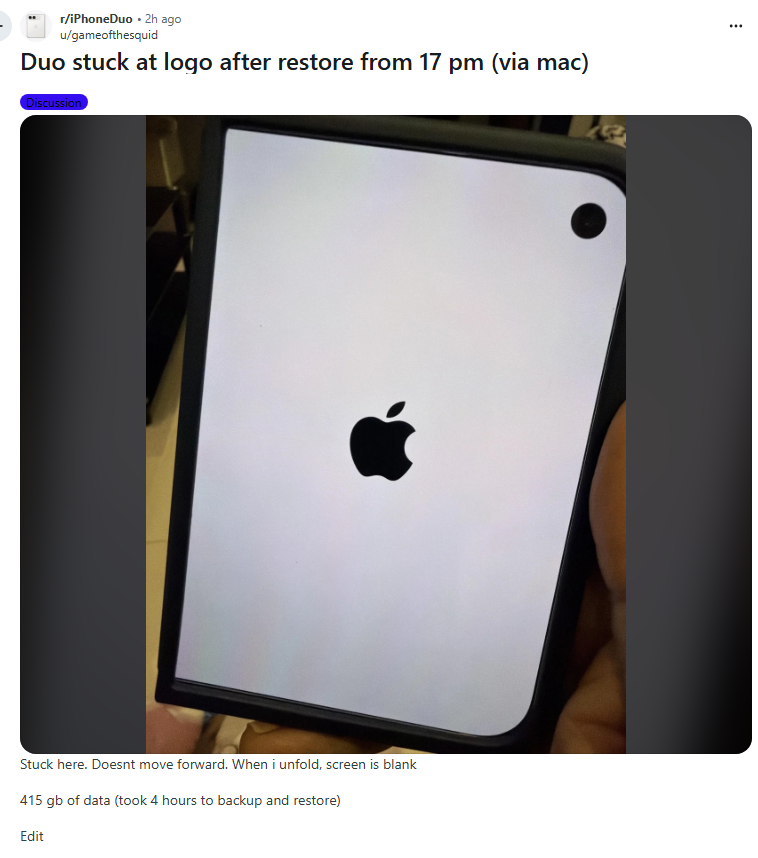
맥에 원래 아이폰에 담긴 것들을 백업해놓고 듀오에 복원하는데 저 화면에서 멈춤
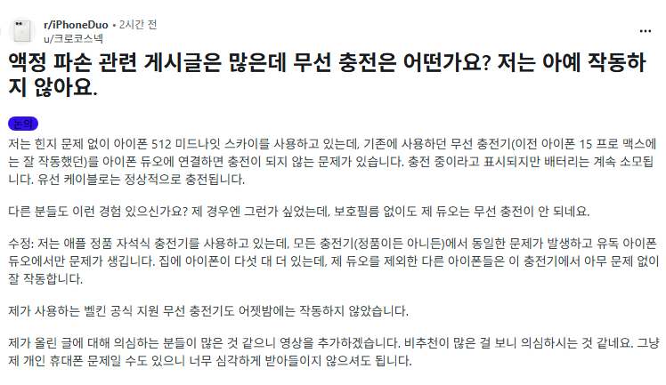
무선충전 기능이 작동하지 않음
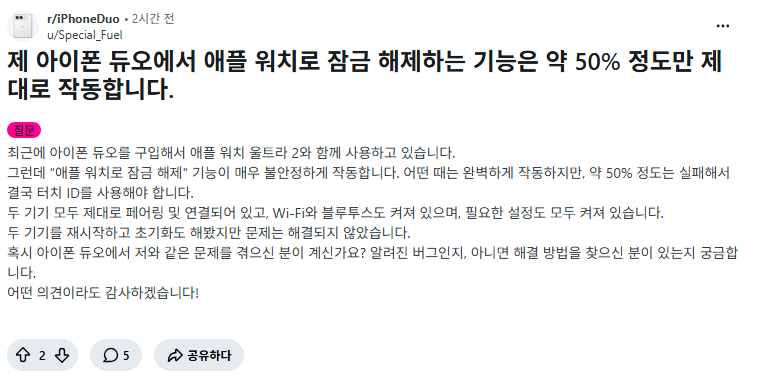
애플워치 연동이 제대로 작동하지 않음
접었을 때 동영상이 이상하게 동작함
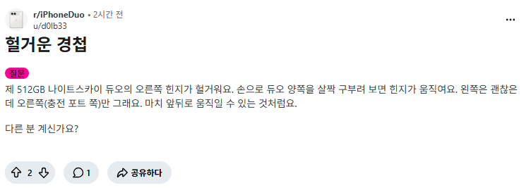
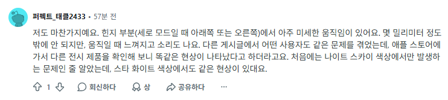
힌지가 앞뒤로 움직임
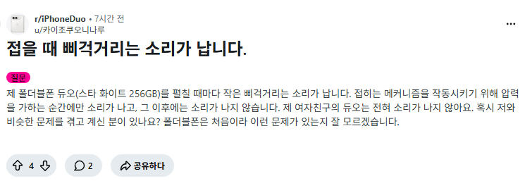
접을때 소리가 남
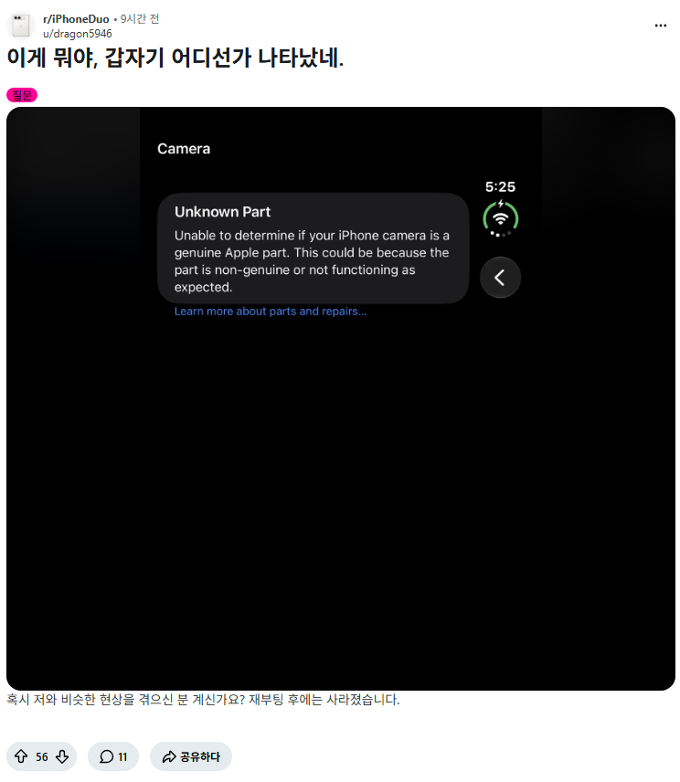
카메라가 애플 정품이 아니라고 나옴
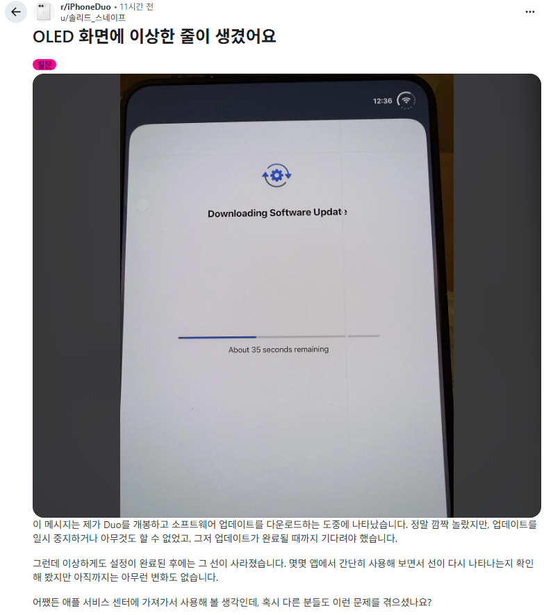
간헐적으로 화면에 이상한 줄이 나타남
그리고 계속 나오는 중인...
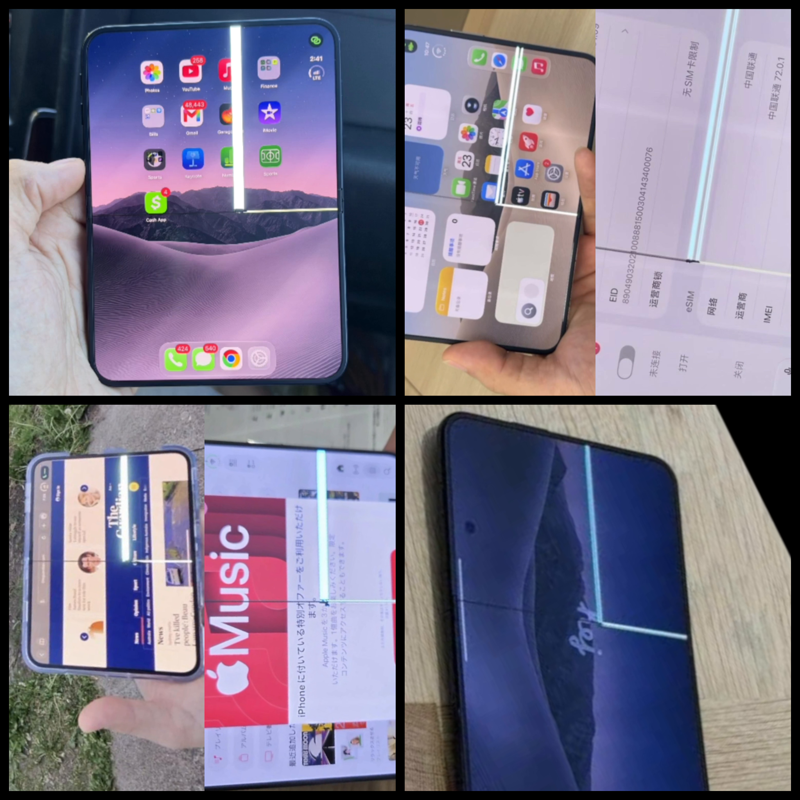
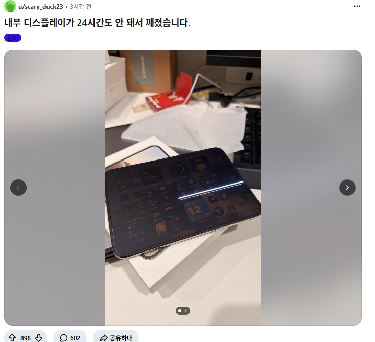
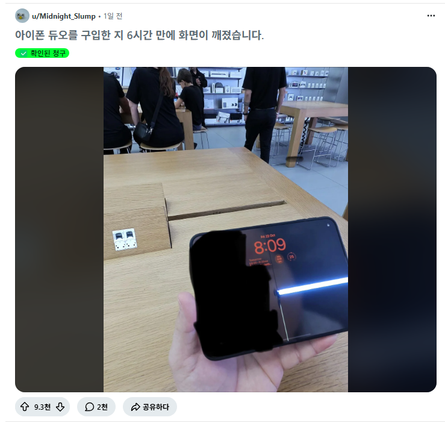
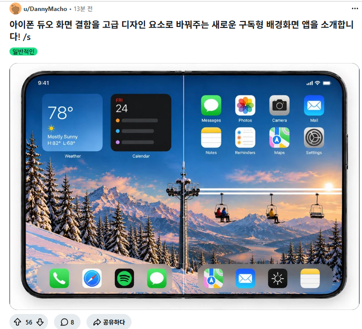


소프트웨어 딸딸이 졸라 치더만 별 거 없었누